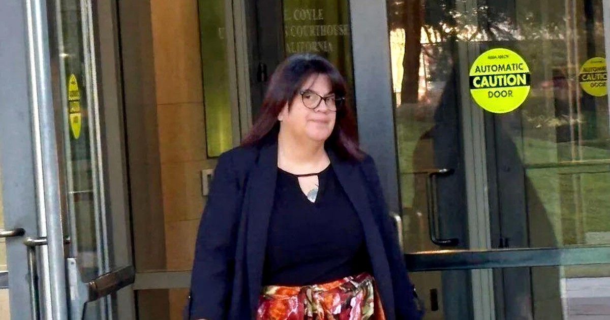
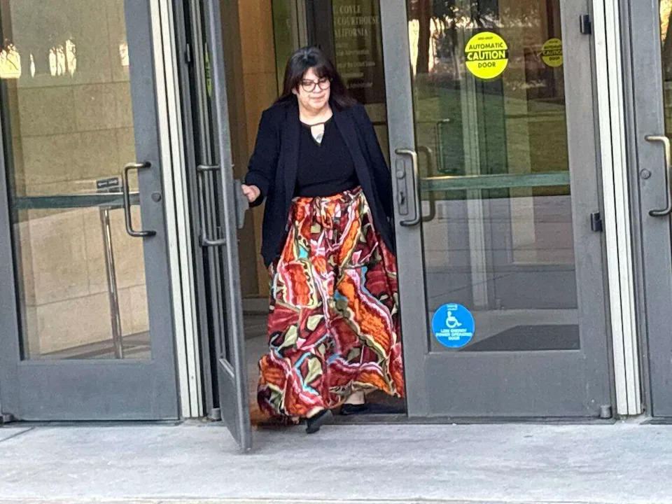
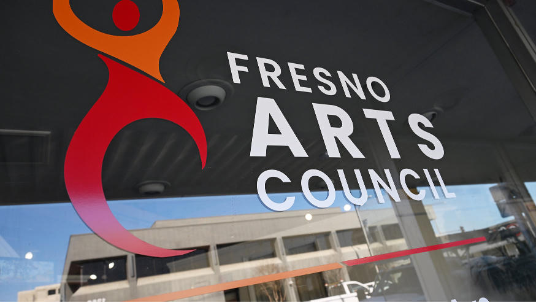
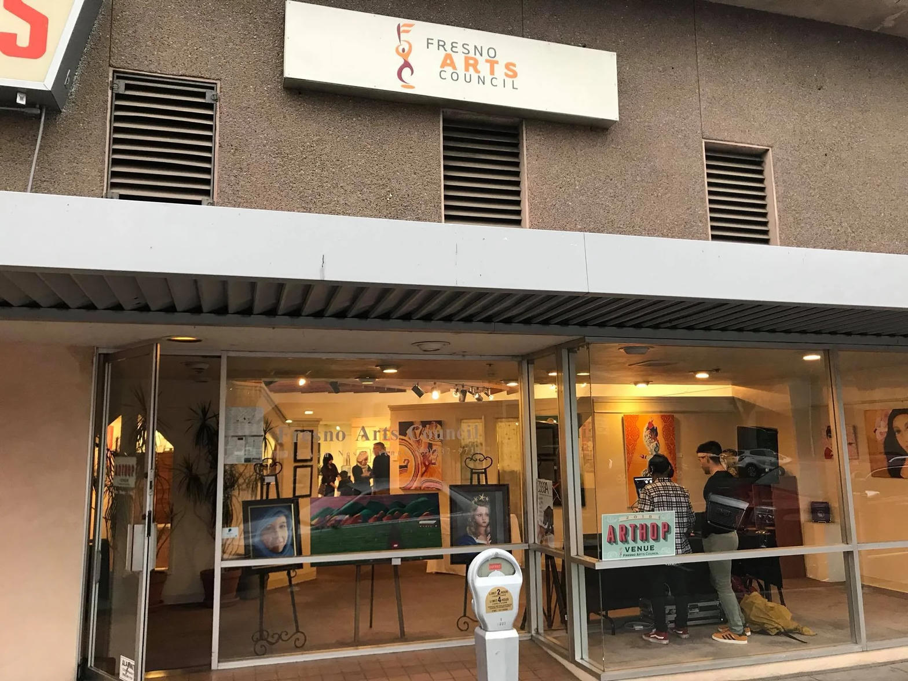
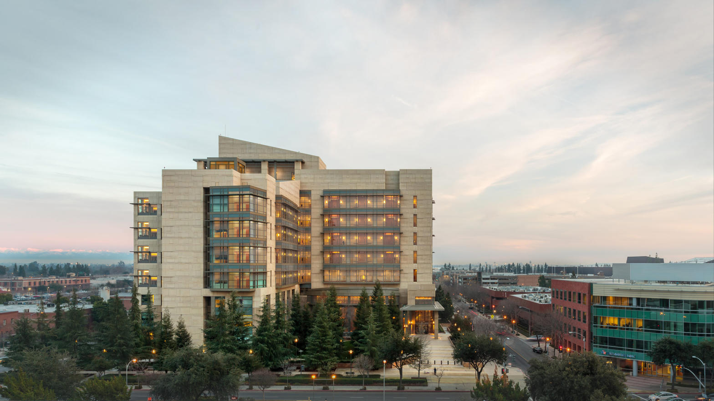

The woman who admitted to embezzling nearly two million dollars from the Fresno Arts Council has been ordered to pay restitution. The city says it still has zero.
Published September 9, 2026 · Tower District, Fresno

Suliana Caldwell leaving the Coyle courthouse on Tuesday after Judge Jennifer L. Thurston ordered about $1.18 million in restitution to the City of Fresno. Photo: Thaddeus Miller, published with the Bee papers.
Taken
$1.8 million
More than 300 unauthorized transfers from June 2022 through February 2026. Wire fraud. One count. Guilty plea April 20.
Ordered Tuesday
About $1.18 million
Judge Thurston put the city’s Measure P loss on her. Hearing ran under ten minutes. She reports to prison October 21.
Returned to Fresno
Zero
PayPal reversed $901,844 to the Arts Council. City Manager Georgeanne White: the council has given the city nothing.
Tuesday morning at the Robert E. Coyle United States Courthouse was short. Suliana Caldwell, 46, former operations manager of the Fresno Arts Council, stood for a restitution hearing that did not last ten minutes.
Judge Jennifer L. Thurston ordered her to pay roughly $1.18 million to the City of Fresno.
That is the public-money slice. The FBI traced about $1.17 million to $1.18 million of the stolen pile to Measure P funds the city owned and sent to the council to administer. The rest, about $642,000, belonged to the nonprofit from other sources.
Caldwell told the court she would do everything in her power to restore what is due back to the city. In August she had already cried in the same building and called what she did inexcusable. The walk out the glass doors on Tuesday did not look like a victory lap. It looked like a person who had run the clock out.

Caldwell leaving the Coyle building after the restitution order. She is scheduled to surrender October 21 to begin a 33-month federal sentence. Photo: Thaddeus Miller.
How the money left
She held the books. Bank accounts. Payroll. Grants. Donations. Reports to the executive director, the board, the city, and the county. That is the job that makes a small nonprofit look solvent to people who do not open the ledger themselves.
The scheme started small in June 2022 with unauthorized withdrawals. In 2023 the City Council designated the Fresno Arts Council to administer Measure P grant money for expanded access to arts and culture. After that the withdrawals jumped. Prosecutors said she was taking more than $80,000 a month on average at the peak. One day in July 2024 she moved about $58,000.
The method was ordinary. She could not find the executive director to sign a vendor check. She used her personal PayPal account as a workaround. Then she kept using it on herself. More than 300 transfers. She covered the hole with false financial reports that the organization accepted because it trusted her.
The Department of Justice said she spent the money gambling at local casinos, where she held VIP statuses, on vacations, on a truck and a minivan, and on other personal expenses. Her attorney has said she was fighting alcohol addiction, a gambling addiction, and depression. Those facts explain a person. They do not refund a grant.
The Arts Council found the theft in February 2026 when a check bounced. She was fired. On March 26 she confessed to the Fresno Police Department and the FBI. On April 20 she pleaded guilty to one count of wire fraud. On August 10 she was sentenced to 33 months in federal prison.

The Fresno Arts Council door. The organization has operated here since 1979. Trust was the internal control. That is not an accounting system.
PayPal paid the council. The city got none.
This is the part the Tuesday hearing actually changed, and the part it did not.
PayPal reversed $901,844 in fraudulent charges and sent that money back to the Fresno Arts Council. Because those reimbursements covered the nonprofit’s separately identified loss, prosecutors stopped asking Caldwell to pay the council itself. They kept asking for the city’s Measure P loss.
The city has not received that money. White said it after the hearing. “The arts council has given zero to the city.” She said the city will pursue every legal option available. The City Attorney’s Office put the same line in a statement: recover the more than $1 million owed by the Arts Council to the city and its taxpayers.
The Arts Council is a 501(c)(3). It is not a city department. White said the city cannot compel the board to write the check. The council’s attorney, Jackson Waste, said he has been in communication with the city’s counsel and looks forward to resolving the issues. That is lawyer for not today.
Caldwell’s attorney, Kevin Rooney, said the simple part out loud. She took money unlawfully. She owes it back. Who receives it is not in her control.
Prosecutors also said PayPal has not cooperated with the effort to route the reversed funds to the city. No PayPal representative appeared in court. No Arts Council representative appeared either.

The Van Ness storefront. After the theft the paid staff was cut, including Executive Director Lilia Gonzales-Chavez. The city took the Measure P arts grant program back in-house.
What the voters bought
Measure P was sold as parks, trails, and arts that people in this city could actually reach. The Expanded Access to Arts and Culture pot was real money. About $6 million a year in later cycles. Organizations waited on awards. Some projects died in the delay. That is the part that does not show up in a courtroom photograph.
The council kept its county arts-partner designation in April even after the plea. Volunteers ran the shop. A board member who is an inactive CPA started checking payments daily. A third-party accounting firm was promised. Lauren Nikkel was later named executive director. Those are repairs after the lock was already open.
Trust is not a control. A bounced check is a control that arrives late. Three hundred transfers is a control that never arrived.
City Hall now says it will chase the nonprofit. That is the correct next sentence. It is also an admission. The city handed a tax stream to a small shop, accepted the shop’s own reports, and learned about the hole when the paper would not clear. Then it discovered that a payment processor can reverse charges to the victim on paper and still leave the taxpayer standing outside the glass.

The Coyle courthouse. Plea in April. Sentence in August. Restitution in September. Surrender in October. The money trail is still a city problem.
The photograph is the easy part
The pictures from Tuesday are the ones the record should keep. She is not smiling. She is not posing. She is walking out of a federal building in a long printed skirt after a judge put more than a million dollars on her name. That is the correct image for this file. Not a cartoon of flying bills. Not a staff headshot from the old website. The walk.
Shame is not restitution. An apology in August did not move Measure P back onto a city ledger. A ten-minute hearing in September named the number. Collection is the work that starts now, against a defendant about to serve 33 months and against a nonprofit that is holding processor reversals the city says belong to taxpayers.
Watch the next move. If the Arts Council keeps the PayPal money and the city files, that filing is the story. If the city settles quiet, that settlement is the story. If nothing is filed, that silence is the story. The theft is already on the record. The only open question is whether Fresno collects.
Sources
YourCentralValley / KSEE-KGPE, “Former Fresno Arts Council manager ordered to pay nearly $1.2M after embezzlement plea,” Sept. 8, 2026.
ABC30, “Former Fresno Arts Council manager Suliana Cadwell ordered to pay back stolen money,” Sept. 8-9, 2026. Hearing under ten minutes. White: the arts council has given zero to the city.
San Joaquin Valley Sun, “Embezzler, Ex-Fresno Arts Council operations chief, ordered to repay City of Fresno,” Sept. 8, 2026. Judge Thurston. About $1.18 million. PayPal reversal $901,844.
Fresno Bee / Modesto Bee, Thaddeus Miller, “Arts council embezzler ordered to pay $1.1M. Still unclear if Fresno will get any,” Sept. 8, 2026. Courthouse photographs and Caldwell quote.
The Business Journal, “Fresno seeks repayment after Measure P fraud restitution ruling,” Sept. 8, 2026. Sept. 2 government memorandum: $1.17 million Measure P, $642,086 other FAC funds.
U.S. Attorney, Eastern District of California, “Former Fresno Arts Council Manager Sentenced to 33 Months in Federal Prison for Embezzling over $1.8 Million in Public Funds,” Aug. 10, 2026.
U.S. Attorney, Eastern District of California, guilty-plea release, April 20, 2026.
Fresno Bee, Robert Rodriguez, sentencing and plea coverage, April 9 and Aug. 10, 2026. Tears at sentencing. $80,000 a month average. July 2024 single-day transfer.
Fresnoland, Omar S. Rashad, April 10, 2026. 300-plus transfers. $1.82 million. March 26 confession to FPD and FBI.
Fresnoland, Feb. 12, 2026. City Manager timeline of how City Hall learned of the missing Measure P money.
Fresno Bee, April 22, 2026. County re-designation after the plea. Staff cuts. Volunteer board controls.
Close
A nonprofit that cannot see three hundred transfers is not a partner. It is a mailbox. Measure P was a tax. The tax left through PayPal. A judge put the city’s number on the woman who sent it. The city still has to collect it. That is not a feeling. That is the next filing.